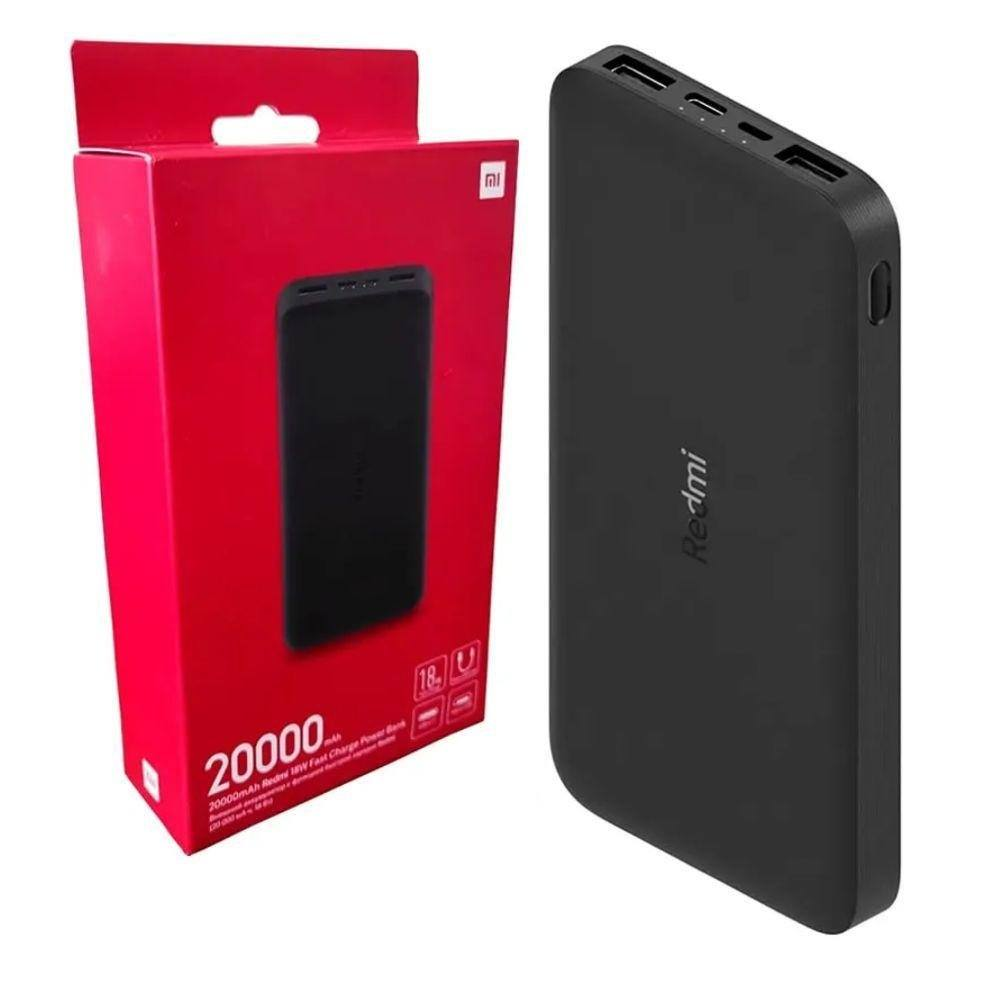
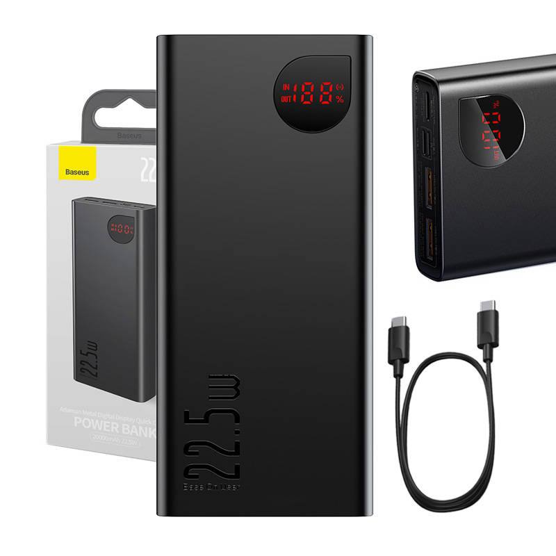
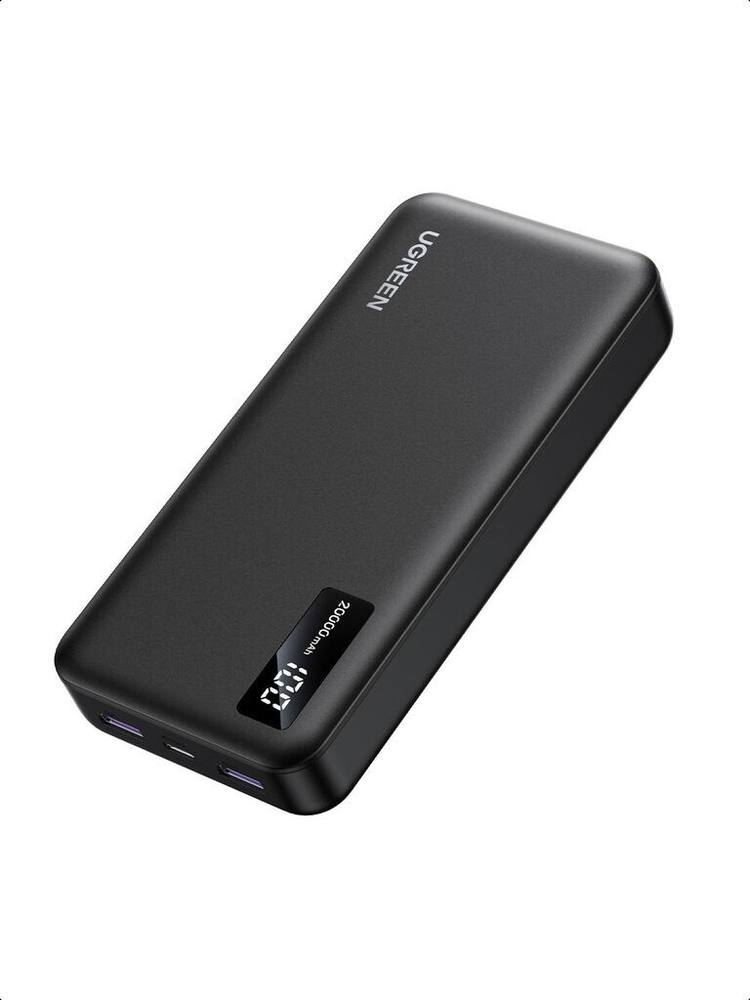

Nếu bạn đã chốt mua sạc dự phòng 20000mAh thì bài này chỉ giải quyết một câu hỏi: trong 3 cái tên bán chạy nhất tầm 400 đến 600 nghìn là Xiaomi, Baseus và Ugreen, con nào hợp với điện thoại bạn đang dùng. Cả 3 đều ghi 20000mAh trên nhãn, nhưng cắm vào máy khác nhau thì tốc độ sạc nhanh có thể khác nhau khá nhiều. Đây là bài đối đầu trực tiếp, khác bài top 5 đã đăng trước đó.
Một lưu ý về giá trước khi vào bảng so sánh: Ugreen PB312 vẫn được CellphoneS niêm yết 590.000đ trong danh mục cập nhật gần đây. Với Baseus, ngày 27/10 mình không tìm được niêm yết lẻ mới đáng tin tại shop Việt Nam, nên bài giữ khoảng giá ghi nhận ngày 11/10/2026 là Baseus khoảng 500–590 nghìn. Giá Xiaomi trong bài là giá kiểm tra ngày 27/10/2026. Giá sale biến động nhanh, bạn nên so giá lại trước khi mua.
Đọc con số 20000mAh cho đúng
20000mAh là dung lượng cell pin ở điện áp 3.7V, tương đương 74Wh. Nhưng điện thoại sạc ở 5V, và quá trình chuyển đổi luôn hao hụt, nên dung lượng thực tế thấp hơn con số trên nhãn. Xiaomi ghi dung lượng định mức 12000mAh ở 5V/3.6A, Baseus cũng ghi 12000mAh, còn Ugreen PB312 ghi 12500mAh ở 5V/3A theo thông số hãng. Vì vậy, với điện thoại pin khoảng 4000mAh, cả 3 con thực tế sạc được khoảng 2,5–3 lần, không phải 5 lần như nhiều bài quảng cáo vẫn viết.
Điểm chung thứ hai: cả 3 đều 74Wh, dưới ngưỡng 100Wh của hàng không, nên được mang lên máy bay ở hành lý xách tay. Đừng bỏ vào hành lý ký gửi, vì pin lithium bị cấm ký gửi.
Chọn theo điện thoại bạn đang dùng, đừng chọn theo W
Chênh lệch giữa 18W và 22.5W chỉ khoảng 10–15 phút cho mốc sạc từ 0 đến 50%, và chỉ khi máy của bạn hỗ trợ đúng chuẩn sạc đó. Quan trọng hơn con số W là chuẩn sạc có hợp máy hay không:
- Dùng iPhone (cổng USB-C): cần chuẩn PD. Baseus và Ugreen đều có PD, Xiaomi 18W chỉ có QC 3.0 nên sạc iPhone sẽ chậm hơn.
- Dùng Samsung: Ugreen hợp nhất, vì có PPS và AFC bên cạnh PD và QC. Baseus cũng có AFC, nhưng Ugreen nhỉnh hơn ở PPS.
- Dùng Huawei: Baseus hợp nhất, vì có SCP, chuẩn sạc nhanh riêng của Huawei, bên cạnh PD và QC.
- Dùng Xiaomi hoặc nhiều máy khác nhau trong nhà: Xiaomi 18W rẻ nhất và tương thích rộng nhờ QC 3.0, nhưng không tối ưu cho máy nào cụ thể.
Nói cách khác, chuẩn sạc không khớp thì cục sạc sẽ tự hạ xuống mức máy nhận được, và bạn trả tiền cho công suất mình không dùng tới.
So sánh nhanh 3 mẫu
| Mẫu | Công suất tối đa | Chuẩn sạc nổi bật | Dung lượng định mức | Màn hình | Cổng ra | Trọng lượng | Bảo hành | Giá tham khảo |
|---|---|---|---|---|---|---|---|---|
| Xiaomi Mi Power Bank 3 (PLM18ZM) | 18W (QC 3.0) | QC 3.0 | 12000mAh (5V/3.6A) | LED 4 chấm | 2A + 1C | ~440g | 6 tháng (xách tay) / 12 tháng (chính hãng) | 479.000đ (Mistore, bản trắng) |
| Baseus Adaman (PPADM20S) | 22.5W (SCP/QC/PD) | SCP (Huawei), PD, AFC | 12000mAh | LED số (V/A/W) | 2A + 1C | ~410–450g | 12 tháng | ~500–590 nghìn* |
| Ugreen PB312 (25683B) | 22.5W (cổng USB-A riêng lẻ) / 20W (USB-C) | PPS (Samsung), PD, QC | 12500mAh (5V/3A) | LED số | 2A + 1C | ~435g (hãng) | 18 tháng (gian hàng chính hãng) | 590 nghìn |
* Giá Baseus là khoảng giá ghi nhận ngày 11/10/2026; giá Xiaomi là 479.000đ tại Mistore (bản trắng, kiểm tra 27/10/2026). Ugreen 590.000đ là giá CellphoneS trong danh mục cập nhật gần đây. Trọng lượng Ugreen theo hãng là khoảng 435g, trong khi Icecat ghi 426g; bài này dùng số của hãng.
1. Xiaomi Mi Power Bank 3 20000mAh 18W (PLM18ZM) — rẻ nhất, không cần nghĩ nhiều

Giá tham khảo: 479.000đ tại Mistore, bản trắng (kiểm tra ngày 27/10/2026)
Đây là con rẻ nhất và dễ mua nhất. Pin Li-polymer 20000mAh/74Wh, sạc nhanh 2 chiều QC 3.0 18W. Cổng ra gồm 2 USB-A và 1 USB-C, cổng vào gồm micro-USB và USB-C, nên nhà còn cáp cũ vẫn dùng được. Máy có 9 lớp bảo vệ và chế độ sạc nhỏ giọt cho tai nghe hoặc vòng đeo tay, bật bằng cách nhấn đúp nút nguồn. Kích thước 150.6 × 72.2 × 26.3mm, nặng khoảng 440g.
- Rẻ nhất, rẻ hơn Ugreen 111 nghìn và chỉ rẻ hơn đầu dưới khoảng Baseus (500 nghìn) 21 nghìn
- Sạc nhanh 2 chiều 18W, cổng vào micro-USB và USB-C
- 9 lớp bảo vệ, có chế độ sạc nhỏ giọt
- Chỉ có LED 4 chấm, không hiển thị phần trăm pin
- 18W thấp nhất nhóm, không tối ưu cho iPhone và Samsung
- Bảo hành xách tay chỉ 6 tháng
Hợp với ai: người cần một cục pin rẻ, bền, dùng cho cả nhà, không quan tâm màn hình số hay sạc nhanh tối đa.
Xem giá tốt nhất trên Shopee →2. Baseus Adaman 20000mAh 22.5W (PPADM20S) — màn hình số, hợp nhiều máy nhất

Giá tham khảo: khoảng 500.000–590.000đ (giá ghi nhận 11/10/2026; biên độ giá thị trường lớn, so giá kỹ)
Baseus Adaman là con mình gợi ý cho người muốn một cục pin làm được nhiều việc nhất trong tầm giá này. Vỏ nhôm nguyên khối, màn hình LED hiển thị phần trăm pin cùng điện áp, dòng điện và công suất theo thời gian thực. Cổng ra gồm 2 USB-A và 1 USB-C, hỗ trợ SCP 22.5W, QC 3.0, AFC và PD 3.0, nên hợp với cả Huawei, Samsung lẫn iPhone. Cổng vào có cả micro-USB, USB-C và Lightning.
- 22.5W nhanh nhất nhóm, hỗ trợ SCP, QC, AFC và PD
- Màn hình số hiển thị phần trăm pin, V/A/W
- Cổng vào đủ micro-USB, USB-C và Lightning
- Vỏ nhôm, mang lên máy bay được (74Wh)
- Giá chênh lớn giữa các shop
- Vẫn nặng khoảng 410–450g
- Bảo hành 12 tháng, ngắn hơn Ugreen
Hợp với ai: nhà dùng nhiều hãng điện thoại khác nhau, đặc biệt có máy Huawei, và người thích nhìn rõ cục pin đang sạc ở bao nhiêu W.
Xem giá tốt nhất trên Shopee →3. Ugreen PB312 20000mAh (25683B) — bảo hành 18 tháng, hợp Samsung nhất

Giá tham khảo: 590.000đ (CellphoneS, danh mục cập nhật gần đây)
Ugreen PB312 là con có bảo hành tốt nhất trong 3 con, với 18 tháng 1 đổi 1 tại gian hàng chính hãng. PB312 có 2 cổng USB-A và 1 cổng USB-C, dung lượng định mức 12500mAh ở 5V/3A, cao nhất trong 3 con. Cổng USB-C đạt 20W, mỗi cổng USB-A riêng lẻ lên tới 22.5W, và máy hỗ trợ PD 3.0, PPS, QC 3.0, AFC và FCP, đặc biệt hợp Samsung nhờ PPS. Máy còn có chế độ sạc dòng nhỏ và sạc xuyên.
Lưu ý: sạc nhanh chỉ tối ưu khi sạc một thiết bị. Cắm 2–3 cổng cùng lúc, tổng công suất chỉ còn 15W chia sẻ. Kích thước 147 × 72 × 28mm, nặng khoảng 435g theo hãng.
- Bảo hành 18 tháng 1 đổi 1 tại gian hàng chính hãng
- Dung lượng định mức 12500mAh, cao nhất nhóm
- Có PPS cho Samsung, PD cho iPhone, QC cho Android khác
- Có chế độ sạc dòng nhỏ và sạc xuyên
- Đắt nhất trong 3 con ở giá niêm yết hiện tại
- Sạc 2–3 máy cùng lúc chỉ còn 15W chia sẻ
- Không sạc được laptop
Hợp với ai: người dùng Samsung, hoặc người coi trọng bảo hành dài và muốn mua ở gian hàng chính hãng cho yên tâm.
Xem giá tốt nhất trên Shopee →Đừng nhầm 2 biến thể cùng tên
Thị trường đang bán song song nhiều biến thể gần giống nhau, và đây là chỗ dễ mua nhầm nhất. Với Xiaomi, ngoài Mi Power Bank 3 PLM18ZM, bạn sẽ gặp bản Redmi PB200LZM, cũng 20000mAh và 18W, dung lượng định mức cũng 12000mAh, nhưng kích thước hơi khác là 154 × 73.6 × 27.3mm và mã toàn cầu là VXN4304GL. Hai bản này không phải cùng một mã, nên khi so giá, bạn phải đối chiếu đúng mã, đừng gộp giá của bản này sang bản kia. Với Ugreen, ngoài PB312 bản classic, còn có bản mới cáp USB-C liền 22.5W, chỉ khoảng 354g, nhưng giá khoảng 799–879 nghìn theo ghi nhận ngày 11/10. Baseus cũng có bản Qpow3 cáp liền giá khoảng 849–930 nghìn, mình chỉ nhắc để bạn khỏi nhầm, không đưa vào bảng so sánh chính.
Mua ở đâu để không dính hàng bảo hành shop?
Sạc dự phòng là món dễ gặp hàng nhái và hàng bảo hành shop trá hình bảo hành hãng, nên chỗ mua quan trọng không kém chọn mã. Mấy nguyên tắc của mình: chỉ mua ở gian hàng chính hãng (Shopee Mall, LazMall) hoặc siêu thị điện máy lớn; hỏi rõ bảo hành hãng hay bảo hành shop trước khi chuyển tiền, nhất là với Xiaomi xách tay và Baseus giá chênh lớn; kiểm tra đúng mã sản phẩm khi nhận hàng, vì PLM18ZM, PB200LZM, PPADM20S và 25683B nhìn bên ngoài khá giống nhau. Đừng ham rẻ mua hàng không tên tuổi, nguy cơ phồng pin và cháy nổ là có thật.
Kết luận: nên mua con nào?
- Ngân sách thấp nhất, dùng cho cả nhà: Xiaomi PLM18ZM, rẻ nhất, tương thích rộng, chấp nhận LED 4 chấm và bảo hành xách tay 6 tháng.
- Cần sạc nhanh đa chuẩn và thích nhìn thông số thật: Baseus PPADM20S, 22.5W, màn hình số V/A/W, cổng vào đủ 3 loại cáp.
- Dùng Samsung hoặc coi trọng bảo hành: Ugreen PB312, bảo hành 18 tháng 1 đổi 1, có PPS, dung lượng định mức cao nhất nhóm.
Quy tắc nhanh: nhìn chuẩn sạc trước, con số W sau, nhớ rằng 20000mAh trên nhãn chỉ cho khoảng 2,5–3 lần sạc điện thoại pin 4000mAh.
Câu hỏi thường gặp
Cả 3 con có được mang lên máy bay không?
Được, ở hành lý xách tay. Cả 3 đều 74Wh, dưới ngưỡng 100Wh. Đừng bỏ vào hành lý ký gửi, vì pin lithium bị cấm ký gửi.
20000mAh sạc được mấy lần điện thoại?
Với điện thoại pin khoảng 4000mAh, cả 3 con sạc được khoảng 2,5–3 lần, vì dung lượng định mức thực tế chỉ khoảng 12000–12500mAh ở 5V. Điện thoại pin 5000mAh thì chỉ được khoảng 2 lần.
22.5W nhanh hơn 18W bao nhiêu?
Không nhiều như quảng cáo gợi ý. Khi máy hỗ trợ đúng chuẩn sạc, chênh lệch khoảng 10–15 phút cho mốc sạc từ 0 đến 50%. Chuẩn không khớp thì cục sạc sẽ tự hạ công suất xuống.
Sạc 3 máy cùng lúc có còn sạc nhanh không?
Không. Với Ugreen PB312, cắm 2–3 cổng cùng lúc thì tổng công suất chỉ còn 15W chia sẻ. Sạc nhanh chỉ tối ưu khi sạc một thiết bị.